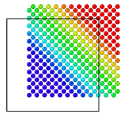
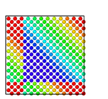

| Table of Contents | Wrap at periodic boundaries | Up |
|---|---|---|
| Prev | Modifiers | Next |
| Table of Contents | Wrap at periodic boundaries | Up |
|---|---|---|
| Prev | Modifiers | Next |
| Input: | Output: |
|

|

|
This modifier remaps particles that are located outside of the simulation box back into the box by "wrapping" their coordinates around at the boundaries of the simulation box (see example on the right).
The wrapping is only performed along those directions for which periodic boundary conditions (PBC) are enabled for the simulation cell. The PBC flags are read from the input simulation file if available and can be manually set in the Simulation cell panel.